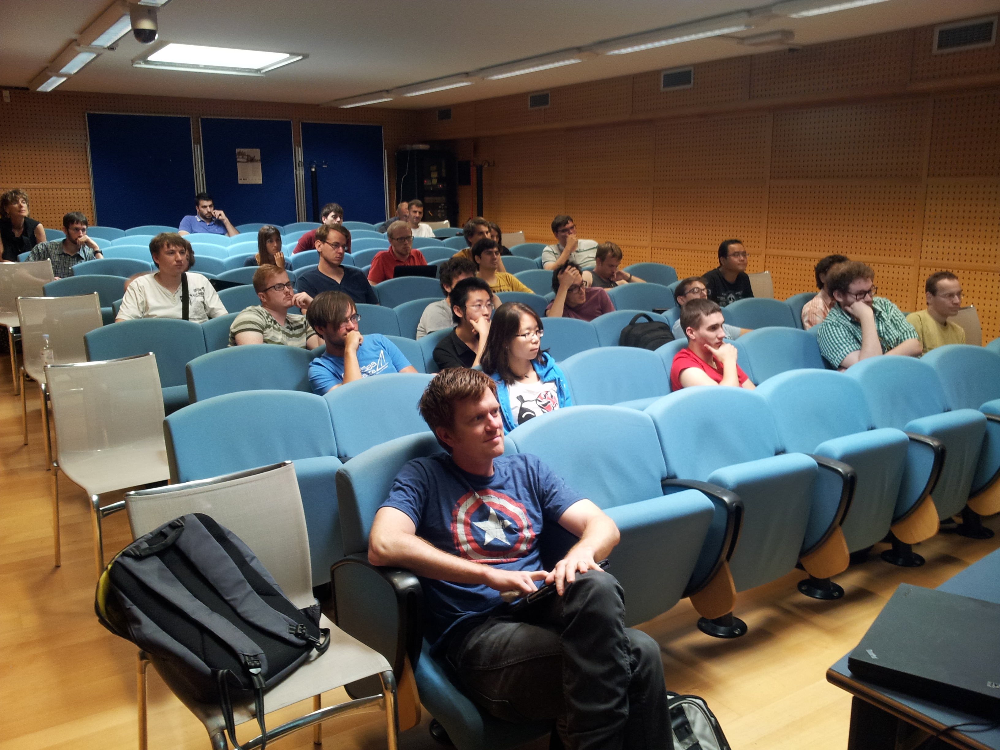
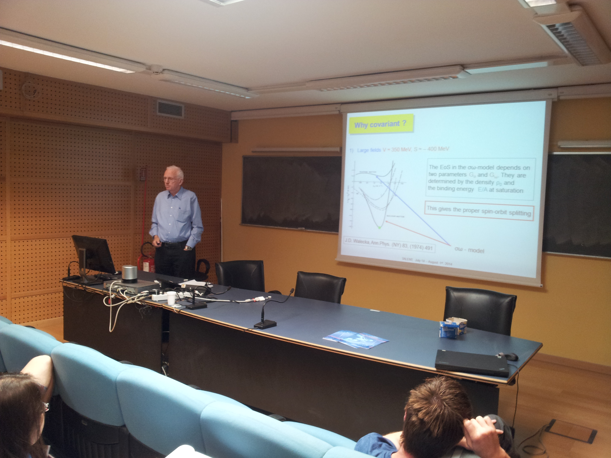
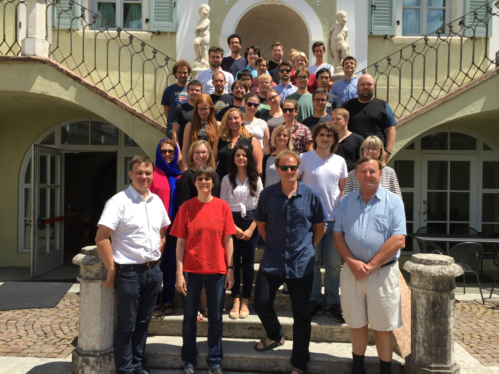
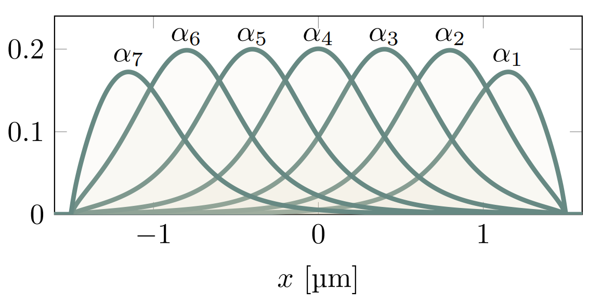
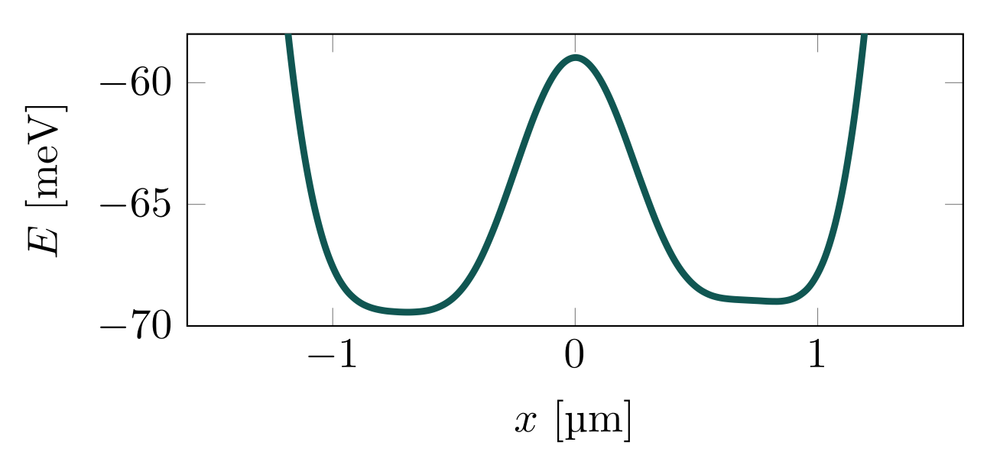
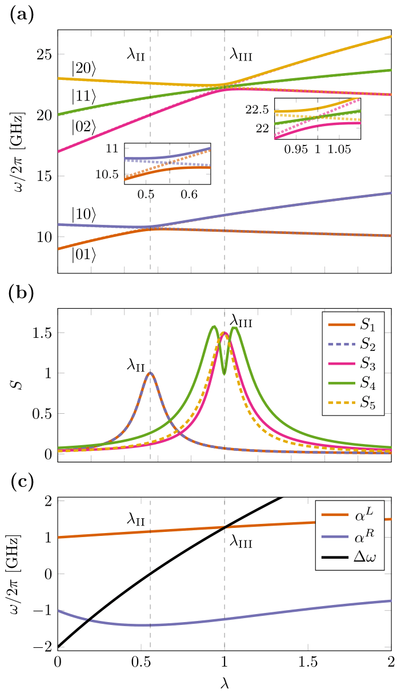
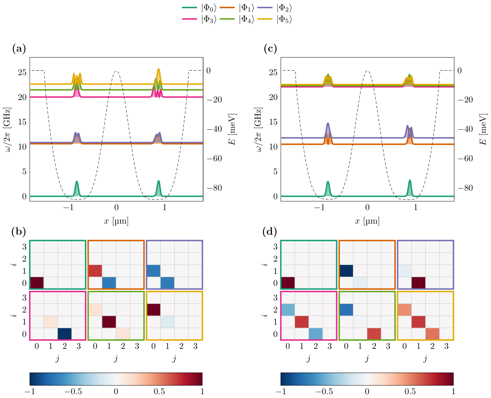

The main emphasis is to give you a short and pedestrian introduction to the whys and hows we can use (with several examples) machine learning methods in nuclear physics. And why this could (or should) be of interest. And how this can be linked with standard many-body theories. And perhaps some quantum computing.
I will also try to highlight educational initiatives and strategies where the ECT* has played and will play an important role in educating the next generation of nuclear scientists
Parts of this talk are based on Artificial Intelligence and Machine Learning in Nuclear Physics, Amber Boehnlein et al., Reviews Modern of Physics 94, 031003 (2022)
Jane Kim (MSU), Julie Butler (MSU), Patrick Cook (MSU), Danny Jammooa (MSU), Daniel Bazin (MSU), Dean Lee (MSU), Witek Nazarewicz (MSU), Michelle Kuchera (Davidson College), Even Nordhagen (UiO), Robert Solli (UiO, Expert Analytics), Bryce Fore (ANL), Alessandro Lovato (ANL), Stefano Gandolfi (LANL), Francesco Pederiva (UniTN), and Giuseppe Carleo (EPFL). Niyaz Beysengulov and Johannes Pollanen (experiment, MSU); Zachary Stewart, Jared Weidman, and Angela Wilson (quantum chemistry, MSU) Jonas Flaten, Oskar, Leinonen, Øyvind Sigmundson Schøyen, Stian Dysthe Bilek, and Håkon Emil Kristiansen (UiO). Marianne Bathen and Lasse Vines (experiments (UiO). Excuses to those I have omitted.
Training in Advanced Low Energy Nuclear Theory, aims at providing an advanced and comprehensive training to graduate students and young researchers in low-energy nuclear theory. The initiative is a multinational network between several Asian, European and Northern American institutions and aims at developing a broad curriculum that will provide the platform for a cutting-edge theory for understanding nuclei and nuclear reactions.
These objectives are met by offering series of lectures, commissioned from experienced teachers in nuclear theory. The educational material generated under this program will be collected in the form of WEB-based courses, textbooks, and a variety of modern educational resources. No such all-encompassing material is available at present; its development will allow dispersed university groups to profit from the best expertise available.
The ECT* and the INT have played central roles here.



The ECT* should continue to play a key role in educating the next generation of nuclear scientists.


If you wish to have a critical read on AI/ML from a societal point of view, see Kate Crawford's recent text Atlas of AI
Here: with AI/ML we intend a collection of machine learning methods with an emphasis on statistical learning and data analysisAn important and emerging field is what has been dubbed as scientific ML, see the article by Deiana et al Applications and Techniques for Fast Machine Learning in Science, arXiv:2110.13041
The authors discuss applications and techniques for fast machine learning (ML) in science – the concept of integrating power ML methods into the real-time experimental data processing loop to accelerate scientific discovery. The report covers three main areas
Machine learning is an extremely rich field, in spite of its young age. The increases we have seen during the last three decades in computational capabilities have been followed by developments of methods and techniques for analyzing and handling large date sets, relying heavily on statistics, computer science and mathematics. The field is rather new and developing rapidly.
Popular software packages written in Python for ML are
and more. These are all freely available at their respective GitHub sites. They encompass communities of developers in the thousands or more. And the number of code developers and contributors keeps increasing.
Not all the algorithms and methods can be given a rigorous mathematical justification, opening up thereby for experimenting and trial and error and thereby exciting new developments.
A solid command of linear algebra, multivariate theory, probability theory, statistical data analysis, optimization algorithms, understanding errors and Monte Carlo methods is important in order to understand many of the various algorithms and methods.
Job market, a personal statement: A familiarity with ML is almost becoming a prerequisite for many of the most exciting employment opportunities. And add quantum computing and there you are!
The approaches to machine learning are many, but are often split into two main categories. In supervised learning we know the answer to a problem, and let the computer deduce the logic behind it. On the other hand, unsupervised learning is a method for finding patterns and relationship in data sets without any prior knowledge of the system. Some authours also operate with a third category, namely reinforcement learning. This is a paradigm of learning inspired by behavioural psychology, where learning is achieved by trial-and-error, solely from rewards and punishment.
Another way to categorize machine learning tasks is to consider the desired output of a system. Some of the most common tasks are:
The large amount of degrees of freedom pertain to both theory and experiment in nuclear physics. With increasingly complicated experiments that produce large amounts data, automated classification of events becomes increasingly important. Here, deep learning methods offer a plethora of interesting research avenues.
Almost every problem in ML and data science starts with the same ingredients:
We seek to minimize the function \( \mathcal{C} (\mathbf{x}, f(\mathbf{\alpha})) \) by finding the parameter values which minimize \( \mathcal{C} \). This leads to various minimization algorithms. It may surprise many, but at the heart of all machine learning algortihms there is an optimization problem.
Representations of two events from the Argon-46 experiment. Each row is one event in two projections, where the color intensity of each point indicates higher charge values recorded by the detector. The bottom row illustrates a carbon event with a large fraction of noise, while the top row shows a proton event almost free of noise.

Given a hamiltonian \( H \) and a trial wave function \( \Psi_T \), the variational principle states that the expectation value of \( \langle H \rangle \), defined through
$$ \langle E \rangle = \frac{\int d\boldsymbol{R}\Psi^{\ast}_T(\boldsymbol{R})H(\boldsymbol{R})\Psi_T(\boldsymbol{R})} {\int d\boldsymbol{R}\Psi^{\ast}_T(\boldsymbol{R})\Psi_T(\boldsymbol{R})}, $$is an upper bound to the ground state energy \( E_0 \) of the hamiltonian \( H \), that is
$$ E_0 \le \langle E \rangle. $$In general, the integrals involved in the calculation of various expectation values are multi-dimensional ones. Traditional integration methods such as the Gauss-Legendre will not be adequate for say the computation of the energy of a many-body system. Basic philosophy: Let a neural network find the optimal wave function
Machine Learning and the Deuteron by Kebble and Rios and Variational Monte Carlo calculations of \( A\le 4 \) nuclei with an artificial neural-network correlator ansatz by Adams et al.
Adams et al: $$ \begin{align} H_{LO} &=-\sum_i \frac{{\vec{\nabla}_i^2}}{2m_N} +\sum_{i < j} {\left(C_1 + C_2\, \vec{\sigma_i}\cdot\vec{\sigma_j}\right) e^{-r_{ij}^2\Lambda^2 / 4 }} \nonumber\\ &+D_0 \sum_{i < j < k} \sum_{\text{cyc}} {e^{-\left(r_{ik}^2+r_{ij}^2\right)\Lambda^2/4}}\,, \label{_auto1} \end{align} $$where \( m_N \) is the mass of the nucleon, \( \vec{\sigma_i} \) is the Pauli matrix acting on nucleon \( i \), and \( \sum_{\text{cyc}} \) stands for the cyclic permutation of \( i \), \( j \), and \( k \). The low-energy constants \( C_1 \) and \( C_2 \) are fit to the deuteron binding energy and to the neutron-neutron scattering length
An appealing feature of the neural network ansatz is that it is more general than the more conventional product of two- and three-body spin-independent Jastrow functions
$$ \begin{align} |\Psi_V^J \rangle = \prod_{i < j < k} \Big( 1-\sum_{\text{cyc}} u(r_{ij}) u(r_{jk})\Big) \prod_{i < j} f(r_{ij}) | \Phi\rangle\,, \label{_auto2} \end{align} $$which is commonly used for nuclear Hamiltonians that do not contain tensor and spin-orbit terms. The above function is replaced by a four-layer Neural Network.


The Hamiltonian of the quantum dot is given by
$$ \hat{H} = \hat{H}_0 + \hat{V}, $$where \( \hat{H}_0 \) is the many-body HO Hamiltonian, and \( \hat{V} \) is the inter-electron Coulomb interactions. In dimensionless units,
$$ \hat{V}= \sum_{i < j}^N \frac{1}{r_{ij}}, $$with \( r_{ij}=\sqrt{\mathbf{r}_i^2 - \mathbf{r}_j^2} \).
This leads to the separable Hamiltonian, with the relative motion part given by (\( r_{ij}=r \))
$$ \hat{H}_r=-\nabla^2_r + \frac{1}{4}\omega^2r^2+ \frac{1}{r}, $$plus a standard Harmonic Oscillator problem for the center-of-mass motion. This system has analytical solutions in two and three dimensions (M. Taut 1993 and 1994).


When you hear phrases like predictions and estimations and correlations and causations, what do you think of? May be you think of the difference between classifying new data points and generating new data points. Or perhaps you consider that correlations represent some kind of symmetric statements like if \( A \) is correlated with \( B \), then \( B \) is correlated with \( A \). Causation on the other hand is directional, that is if \( A \) causes \( B \), \( B \) does not necessarily cause \( A \).
The above concepts are in some sense the difference between old-fashioned machine learning and statistics and Bayesian learning. In machine learning and prediction based tasks, we are often interested in developing algorithms that are capable of learning patterns from given data in an automated fashion, and then using these learned patterns to make predictions or assessments of newly given data. In many cases, our primary concern is the quality of the predictions or assessments, and we are less concerned about the underlying patterns that were learned in order to make these predictions.
Physics based statistical learning points however to approaches that give us both predictions and correlations as well as being able to produce error estimates and understand causations. This leads us to the very interesting field of Bayesian statistics.
Bayes' theorem
$$ p(X\vert Y)= \frac{p(X,Y)}{\sum_{i=0}^{n-1}p(Y\vert X=x_i)p(x_i)}=\frac{p(Y\vert X)p(X)}{\sum_{i=0}^{n-1}p(Y\vert X=x_i)p(x_i)}. $$The quantity \( p(Y\vert X) \) on the right-hand side of the theorem is evaluated for the observed data \( Y \) and can be viewed as a function of the parameter space represented by \( X \). This function is not necessarily normalized and is normally called the likelihood function.
The function \( p(X) \) on the right hand side is called the prior while the function on the left hand side is the called the posterior probability. The denominator on the right hand side serves as a normalization factor for the posterior distribution.
Predictions made with eleven global mass model and Bayesian model averaging


Beam time and compute cycles are expensive!
Here we describe a method for generating motional entanglement between two electrons trapped above the surface of superfluid helium. In this proposed scheme these electronic charge qubits are laterally confined via electrostatic gates to create an anharmonic trapping potential. When the system is cooled to sufficiently low temperature these in-plane charge qubit states are quantized and circuit quantum electrodynamic methods can be used to control and readout single qubit operations. Perspectives for quantum simulations with quantum dots systems will be discussed.
Electrons on superfluid helium represent (see https://www.youtube.com/watch?v=EuDuM-fe-lA&ab_channel=JoshuahHeath) a promising platform for investigating strongly-coupled qubits.
A systematic investigation of the controlled generation of entanglement between two trapped electrons under the influence of coherent microwave driving pulses, taking into account the effects of the Coulomb interaction between electrons, may be of great interest for quantum information processing using trapped electrons.


Entanglement is the fundamental characteristic that distinguishes quantum systems composed of two or more coupled objects from their classical counterparts. The study of entanglement in precisely engineered quantum systems with countably many degrees of freedom is at the forefront of modern physics and is a key resource in quantum information science (QIS). This is particularly true in the development of two-qubit logic for quantum computation.
The generation of two-qubit entanglement has been demonstrated in a wide variety of physical systems used in present-day quantum computing, including superconducting circuits, trapped ions, semiconductor quantum dots, color-center defects in diamond, and neutral atoms in optical lattices, just to name a few.
Generating an entanglement between two quantum systems rely on exploiting interactions in a controllable way. The details in the interaction Hamiltonian between two systems defines the protocol schemes for two-qubit logic.
In superconducting circuits the interaction between qubits may arise from direct capacitive coupling between circuit elements or by indirect coupling of two qubits to a common resonator (virtually populating resonator mode) which results in a non-local Hamiltonian in the form of exchange interaction. This allow to implement various schemes for entanglement, such as controlled-phase gate, resonator-induced phase gate, cross-resonance gates etc.
Entanglement gates in trapped ions are produced by means of the Coulomb interaction, where shared motional modes of two or more ions, entangled to their internal states, used for transferring excitations between ion qubits. This has been experimentally demonstrated.
In photonic quantum computing schemes two-qubit entangling operations are realized by nonlinear interactions between two photons scattering from quantum dots, plasmonic nanowires, diamond vacancy centers and others embedded into waveguides. Two-qubit gates in semiconductor quantum dots are based on spin-spin exchange interactions or generated by coupling to a superconducting resonator via artificial spin-orbit interaction.
Coulomb interaction governed entanglement can be realized in the system of electrons on the surface of superfluid helium, where qubit states are formed by in-plane lateral motional or out-of plane Rydberg states. Trapped near the surface of liquid helium these states have different spatial charge configurations and the wavefunctions of different electrons do not overlap.
This results in a strong exchange free Coulomb interaction which depends on the states of the electrons. The lack of disorder in the systems also leads to slow electron decoherence, which has attracted interest to the system as a candidate for quantum information processing.
The static Coulomb interaction arises from a virtual photon exchange process between two charge particles according to quantum electrodynamics. This results in a correlated motion of two charges generating quantum entanglement.
Surface state electrons (SSE) 'floating' above liquid helium originates from quantization of electron's perpendicular to the surface motion in a trapping potential formed by attractive force from image charge and a large \( \sim \) 1 eV barrier at the liquid-vacuum interface. At low temperatures the SSE are trapped in the lowest Rydberg state for vertical motion some 11 nm above the helium surface, which is perfectly clean and has a permittivity close to that of vacuum.
The weak interaction with rthe enviroment, which is mainly governed by interaction with quantized surface capillary waves (ripplons) and bulk phonons, ensures long coherence times - a vital ingredient for any qubit platform.
Hamiltonian:
$$ \begin{align} \hat{H} &=\frac{\hat{p}_1^2}{2} + \sum_{i = 1}^7 V_i\alpha_i[\hat{x}_1] + \frac{\hat{p}_2^2}{2} + \sum_{i = 1}^7 V_i\alpha_i[\hat{x}_2] + \frac{\kappa}{\sqrt{(\hat{x}_1-\hat{x}_2)^2 + a^2}} \label{_auto3}\\ &= h[\hat{p}_1,\hat{x}_1] + h[\hat{p}_2,\hat{x}_2] + u[\hat{x}_1,\hat{x}_2] \label{_auto4} \end{align} $$
Hamiltonian:
$$ \begin{align} \hat{H} &= \frac{\hat{p}_1^2}{2} + v[\hat{x}_1] + \frac{\hat{p}_2^2}{2} + v[\hat{x}_2] + \frac{\kappa}{\sqrt{(\hat{x}_1-\hat{x}_2)^2 + a^2}} \label{_auto5}\\ &= h[\hat{p}_1,\hat{x}_1] + h[\hat{p}_2,\hat{x}_2] + u[\hat{x}_1,\hat{x}_2] \label{_auto6} \end{align} $$
Hamiltonian:
$$ \begin{align} \hat{H} &= \frac{\hat{p}_1^2}{2} + v[\hat{x}_1] + \frac{\hat{p}_2^2}{2} + v[\hat{x}_2] + \frac{\kappa}{\sqrt{(\hat{x}_1-\hat{x}_2)^2 + a^2}} \label{_auto7}\\ &\equiv h[\hat{p}_1,\hat{x}_1] + h[\hat{p}_2,\hat{x}_2] + u[\hat{x}_1,\hat{x}_2] \label{_auto8} \end{align} $$Energy states:
$$ \begin{equation} \vert\Phi_k\rangle = \sum_{i < j} C_{ij, k}\frac{\vert \varphi_i \varphi_j\rangle - \vert \varphi_j \varphi_i\rangle}{\sqrt{2}}, \label{_auto9} \end{equation} $$(Slater basis)
Hamiltonian:
$$ \begin{align} \hat{H} &= \frac{\hat{p}_1^2}{2} + v^L[\hat{x}_1] + \frac{\hat{p}_2^2}{2} + v^R[\hat{x}_2] + \frac{\kappa}{\sqrt{(\hat{x}_1-\hat{x}_2)^2 + a^2}} \label{_auto10}\\ &\equiv h^L[\hat{p}_1,\hat{x}_1] + h^R[\hat{p}_2,\hat{x}_2] + u[\hat{x}_1,\hat{x}_2] \label{_auto11} \end{align} $$Energy states:
$$ \begin{equation} \vert\Phi_k\rangle = \sum_{i} \sum_{j} C_{ij, k}\vert \varphi^L_i \varphi^R_j\rangle, \label{_auto12} \end{equation} $$(product basis)
Energy states:
$$ \begin{equation} \vert\Phi_k\rangle = \sum_{i} \sum_{j} C_{ij, k}\vert \varphi^L_i \varphi^R_j\rangle, \label{_auto13} \end{equation} $$(product basis)

Hamiltonian:
$$ \begin{align} \hat{H} &= \frac{\hat{p}_1^2}{2} + v^L[\hat{x}_1] + \frac{\hat{p}_2^2}{2} + v^R[\hat{x}_2] + \frac{\kappa}{\sqrt{(\hat{x}_1-\hat{x}_2)^2 + a^2}} \label{_auto14}\\ &\equiv h^L[\hat{p}_1,\hat{x}_1] + h^R[\hat{p}_2,\hat{x}_2] + u[\hat{x}_1,\hat{x}_2] \label{_auto15} \end{align} $$Energy states:
$$ \begin{equation} \vert\Phi_k\rangle = \sum_{i} \sum_{j} C_{ij, k}\vert \varphi^L_i \varphi^R_j\rangle, \label{_auto16} \end{equation} $$(Hartree basis)
Hamiltonian:
$$ \begin{align} \hat{H} &= \frac{\hat{p}_1^2}{2} + v^L[\hat{x}_1] + \frac{\hat{p}_2^2}{2} + v^R[\hat{x}_2] + \frac{\kappa}{\sqrt{(\hat{x}_1-\hat{x}_2)^2 + a^2}} \label{_auto17}\\ &\equiv h^L[\hat{p}_1,\hat{x}_1] + h^R[\hat{p}_2,\hat{x}_2] + u[\hat{x}_1,\hat{x}_2] \label{_auto18} \end{align} $$Energy states:
$$ \begin{equation} \vert\Phi_k\rangle = \sum_{i = 0}^{N^L} \sum_{j = 0}^{N^R} C_{ij, k}\vert \varphi^L_i \varphi^R_j\rangle, \label{_auto19} \end{equation} $$(Hartree basis)
Energy states:
$$ \begin{equation} \vert\Phi_k\rangle = \sum_{i = 0}^{N^L} \sum_{j = 0}^{N^R} C_{ij, k}\vert \varphi^L_i \varphi^R_j\rangle, \label{_auto20} \end{equation} $$(Hartree basis)

Hamiltonian:
$$ \begin{align} \hat{H} &= \frac{\hat{p}_1^2}{2} + v^L[\hat{x}_1] + \frac{\hat{p}_2^2}{2} + v^R[\hat{x}_2] + \frac{\kappa}{\sqrt{(\hat{x}_1-\hat{x}_2)^2 + a^2}} \label{_auto21}\\ &\equiv h^L[\hat{p}_1,\hat{x}_1] + h^R[\hat{p}_2,\hat{x}_2] + u[\hat{x}_1,\hat{x}_2] \label{_auto22} \end{align} $$Energy states:
$$ \begin{equation} \vert\Phi_k\rangle = \sum_{i = 0}^{N^L} \sum_{j = 0}^{N^R} C_{ij, k}\vert \varphi^L_i \varphi^R_j\rangle, \label{_auto23} \end{equation} $$(Hartree basis)
By adjusting the potential we can change the anharmonicities and detuning of the wells.
We search for well configurations corresponding to three different types of interaction between the two electrons.
Both anharmonicity and detuning changes with the shape of our well. We create a voltage parameterization
$$ \begin{equation} V(\lambda) = (1-\lambda)V_\mathrm{I} + \lambda V_\mathrm{III} \label{_auto24} \end{equation} $$

